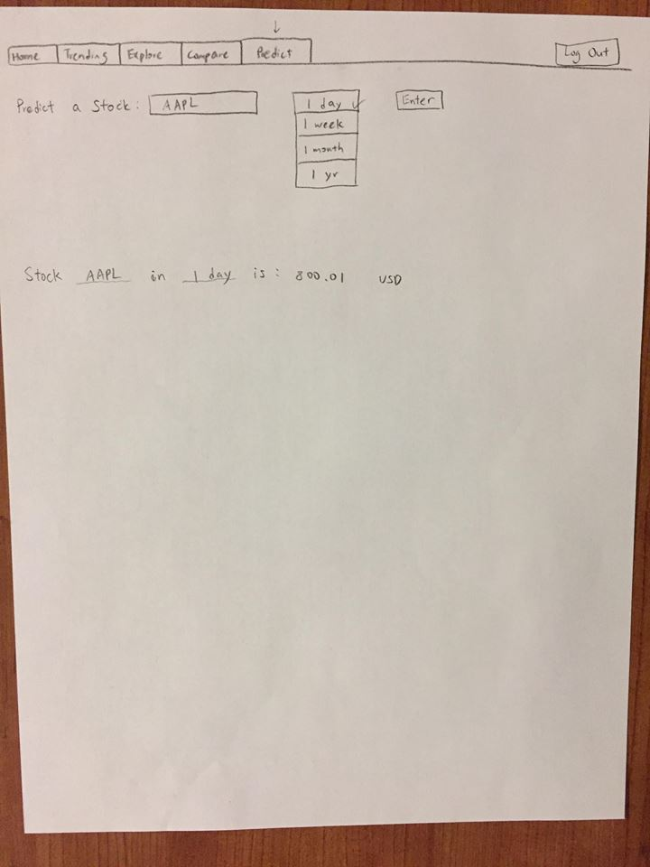
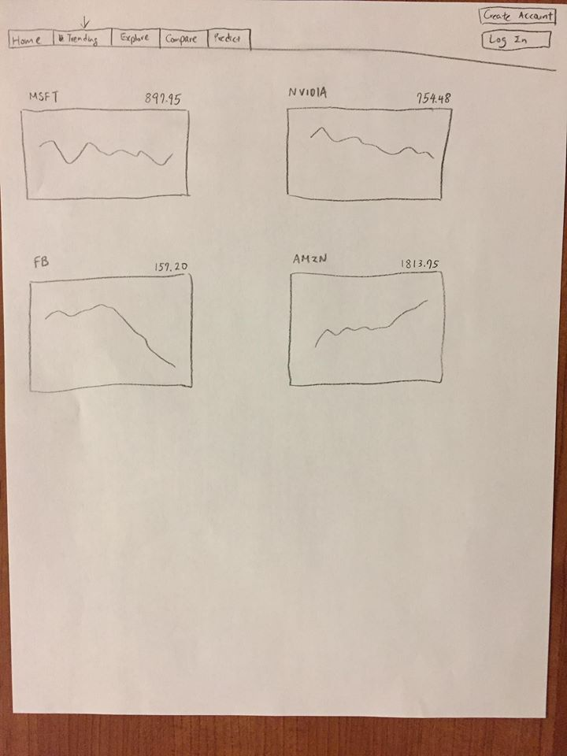
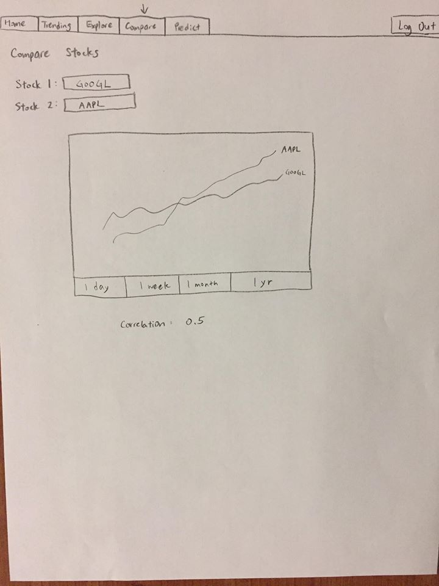
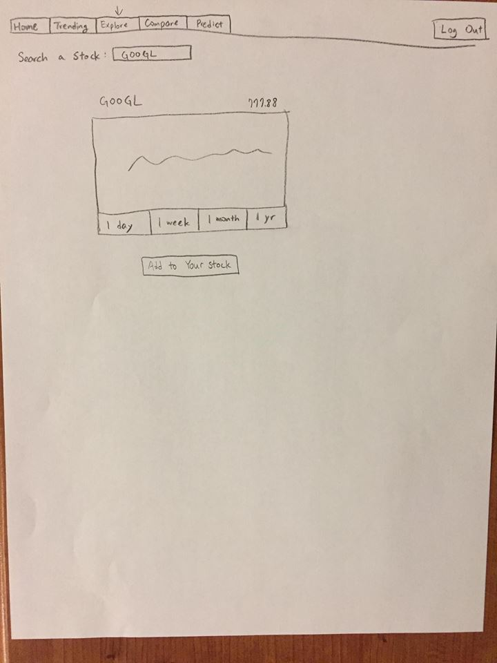
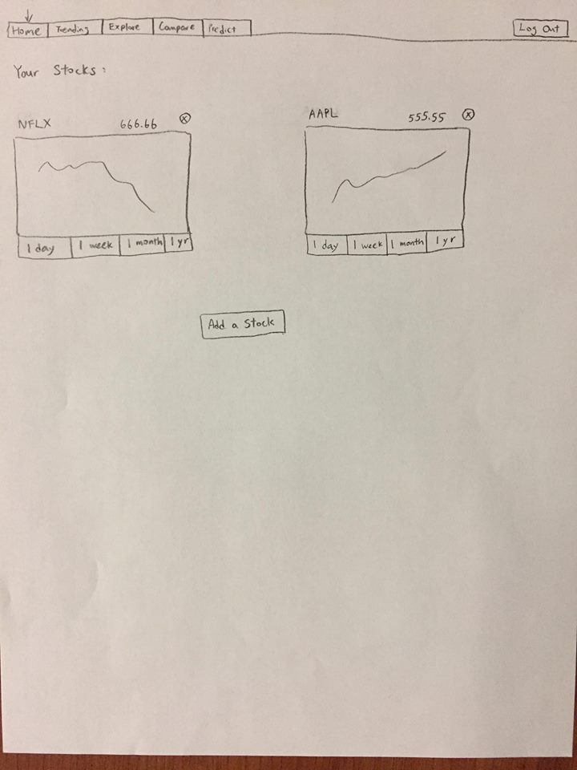

Each logged in user will have a user uid (uid), user email (uemail), user password (upw) and an array (arr) of personal stocks associated with them. Trending Stocks DB: Preloaded stock data for some popular trending stocks Layout:
Home Page:Tabs at the top allowing navigation between four different pages, log in button (if not logged in) For each stock in arr , get stock data from alphavantage and plot using vue-chartjs each graph for the last year. (So chart is bound to the data) Have a toggle allowing users to see past month, past week, past day data which will require editing of the data array For each stock have an option to add a note text note about the stock and view By clicking on add stock button we redirect to explore page
Trending Page:Similar to the home page but display first 10 options from preloaded stock data (option to add to personal arr with button click) Also will have an add function to add a stock using its ticker. This will require a call to alphavantage to get the stock data from.
Explore Page:You type a stock ticker into the search bar and we call the api to find the data affiliated and display it in a chart. Then there is a button to add the stock to your personal stocks.
Compare Page:First prompts using a modal you to select two stocks from your stock list. Initially generates a single plot with both data sets on it. Sets one variable
Prediction Page:Prompts you to select a stock from your stock list first. Performs linear regression on past day, week month of year of data to predict next data point.
    